Международная школа-пансион Malta Crown
Malta Crown — частная школа-пансион на Мальте
Обучение
Маршрут от начальной школы до поступления в университет
Мы принимаем детей из разных стран в возрасте от 5 до 17 лет с любым уровнем владения английским языком на обучение по британской программе для международных школ в соответствии со спецификациями Pearson Edexcel.
Если уровень английского недостаточен для освоения общеобразовательных предметов на английском, для ученика предусматривается предварительное обучение по адаптационной программе.
Школа-пансион Malta Crown предоставляет возможность параллельно изучать две программы среднего образования: британскую и российскую, и получить два документа о среднем образовании: международный сертификат IGCSE и российский государственный аттестат по итогам экзаменов ОГЭ/ЕГЭ.
Наличие двух документов существенно расширяет образовательные возможности выпускников: они могут подавать документы как в ведущие российские вузы, так и в престижные зарубежные учебные заведения без дополнительных сложностей с признанием квалификации.
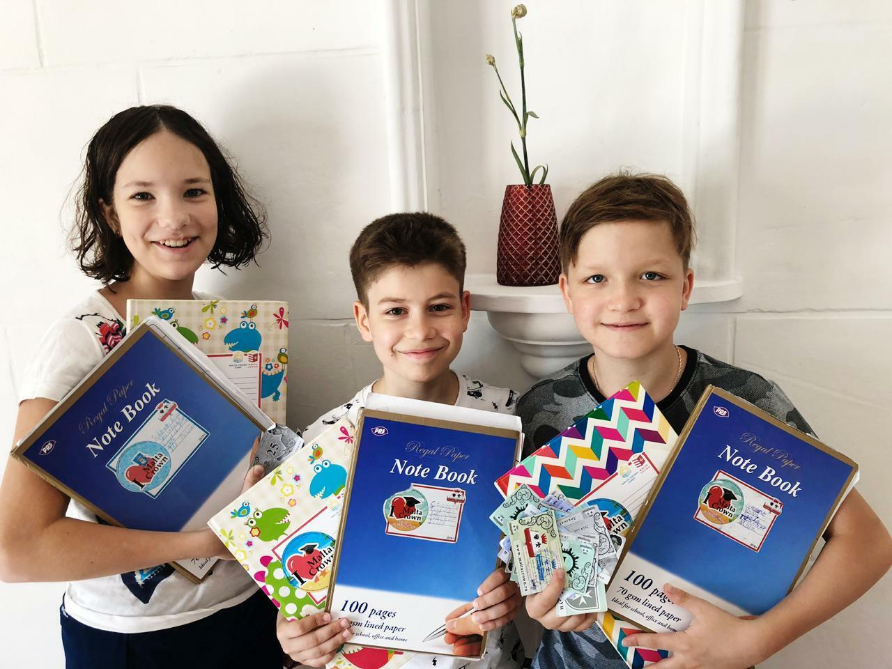
1-6 классыНачальная школа
Бережная адаптация к учебной среде, базовые академические навыки, английский язык и постоянное внимание педагогов в малых классах.
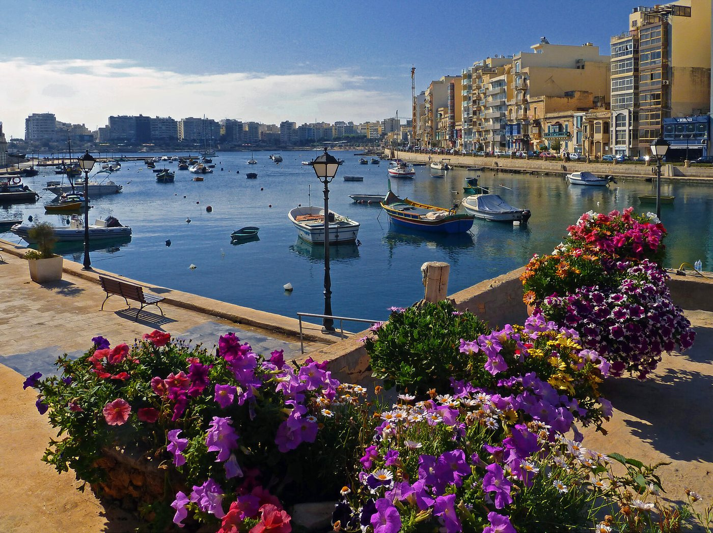
ГлавноеАнглийская среда
Ученики учатся в европейской англоязычной стране и ежедневно используют язык в учебе, быту и общении.
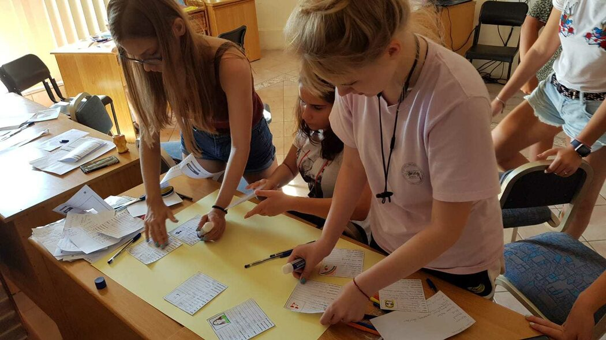
7-11 классыСредняя школа
Международная программа среднего образования на основе британского учебного плана и подготовка к экзаменам IGCSE.
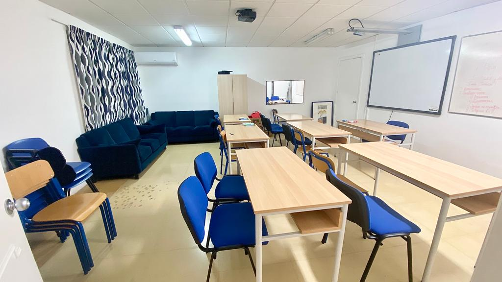
ПлюсРоссийский блок
По запросу международная программа дополняется российской общеобразовательной программой с 1 по 11 класс и подготовкой к ОГЭ/ЕГЭ.
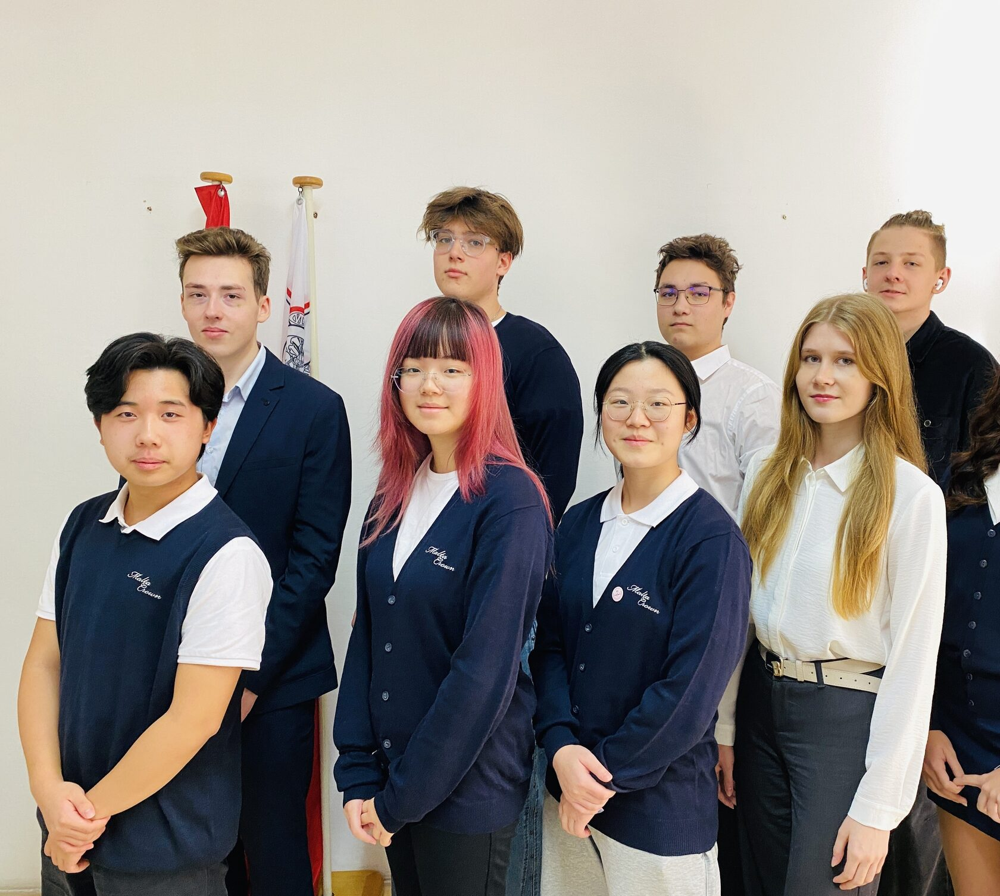
12-13 классыПодготовка к университету
Профориентация, усиленный английский, проектная деятельность и путь к международно признаваемым квалификациям.
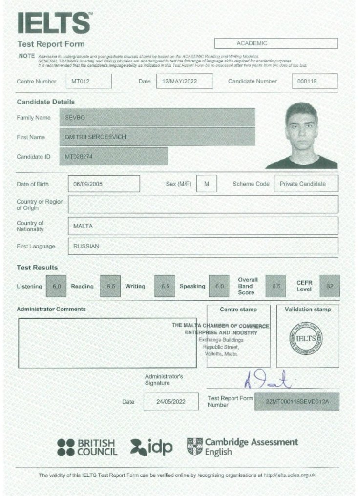
РезультатАкадемические достижения и выбор вуза
Школа помогает ученику выстроить образовательную траекторию и подготовиться к поступлению в зарубежные или российские вузы.
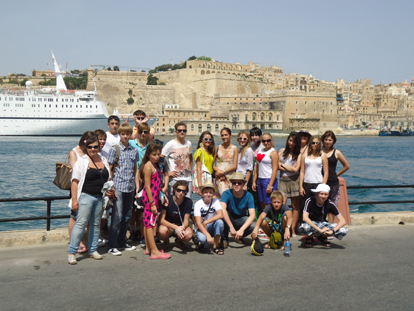
Вводный курс и каникулыОзнакомительные программы
Краткосрочные форматы помогают познакомиться со школой, английской средой, территорией школы и жизнью на Мальте.
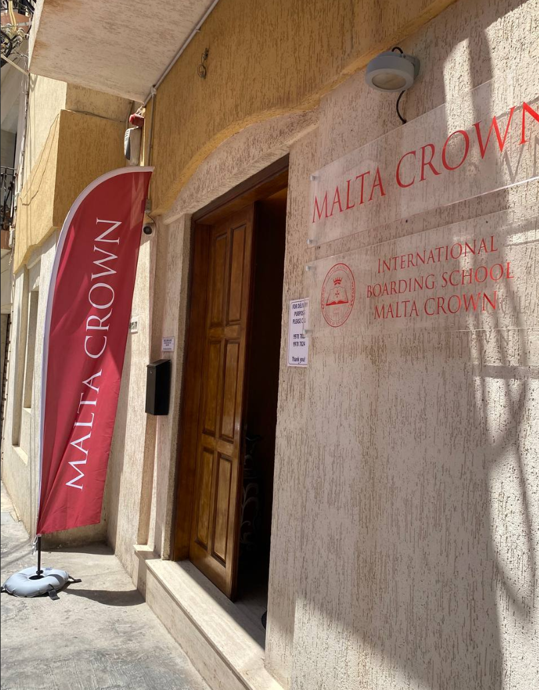
Для семейПоддержка родителей
Консультации по обучению, проживанию, визовым вопросам и адаптации семьи к образовательному маршруту.
Почему родители доверяют
Индивидуальный подход как ежедневная системная работа с учащимся
Камерная школа, где ребенка знают по имени, а образовательный маршрут строят для достижения его целей.
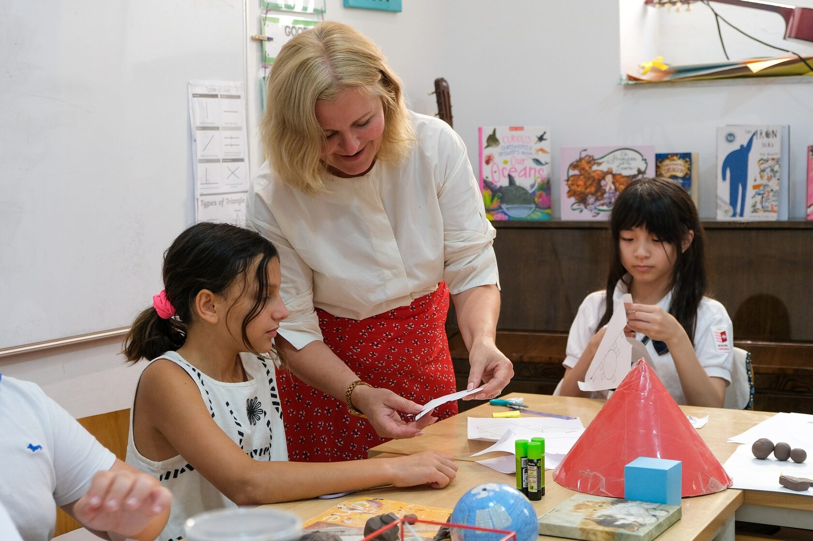
Для каждого учащегося составляется индивидуальный образовательный маршрут — с учётом его академической подготовки, уровня владения английским языком и образовательных целей.
Ежедневное общение на английском в школе, на уроках и за пределами школы даёт опыт межкультурного общения и расширяет кругозор.
Внеурочный досуг для каждого ученика формируется с учетом персональных запросов: дополнительное образование, творческие и спортивные занятия, познавательные экскурсии и пешие прогулки.
Проектная деятельность, знакомство с востребованными профессиями и требованиями к поступлению в престижные университеты разных стран способствуют осознанному выбору дальнейшего образовательного пути.
Школа рассчитана на небольшое количество учеников — в классах не более 8 человек. Каждому ученику уделяется персональное внимание во всех областях: в учёбе, во внеурочное время и быту. Опытные педагоги помогают детям адаптироваться психологически и раскрыть свои способности.
Проживание
Пансион и круглосуточная забота о ребенке
Школа-пансион Malta Crown находится в популярном образовательном центре — городе Сент-Джулианс. Ученики проживают в школьном комплексе, расположенном по адресу:
"L-Arkati", Mensija street,St. Julian's STJ1960, Malta
Здание оборудовано для круглогодичного проживания и обучения детей и полностью соответствует официальным требованиям, предъявляемым к образовательным учреждениям и пансионам на Мальте.
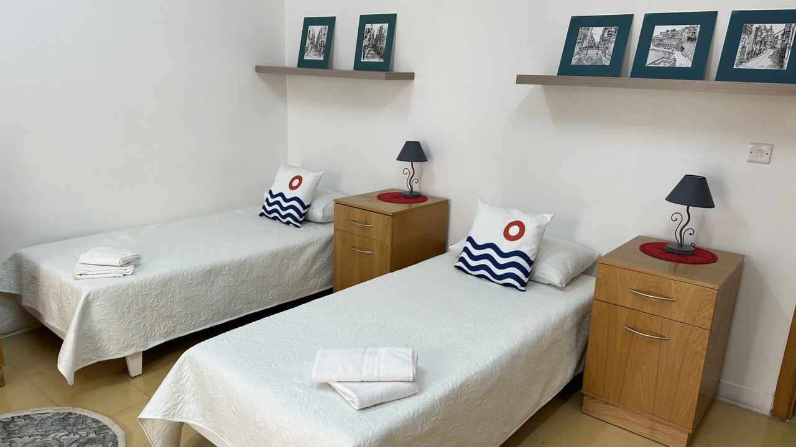
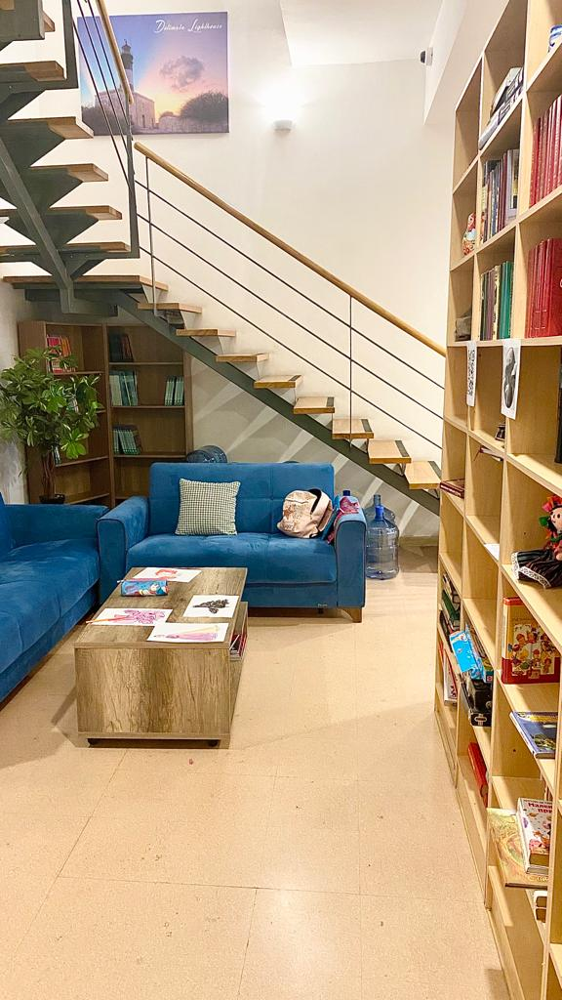
Проживание
2–4-местные комнаты с отдельным санузлом
- Кампус в Сент-Джулиансе рядом с прогулочной набережной и городским пляжем.
- Качественное проживание и пятиразовое питание.
- Комфортная психологическая обстановка, персональное внимание педагогов и воспитателей.
- Безопасная среда и решение персональных бытовых запросов.
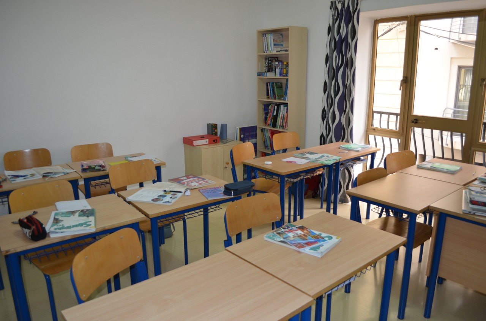
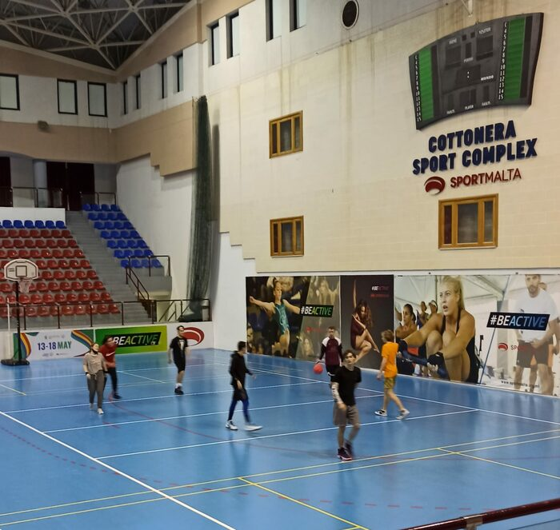
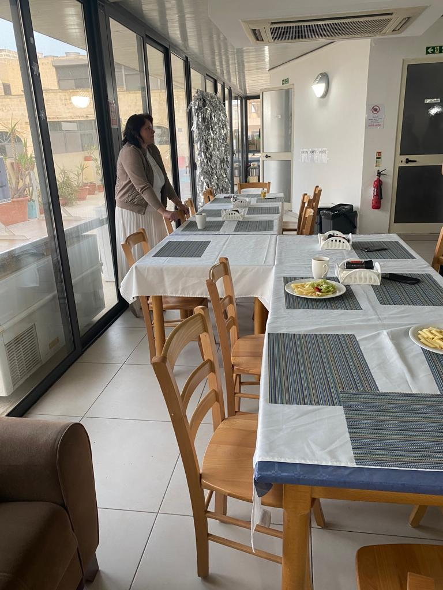
Почему Мальта
Почему Мальта?
Дети учатся на Мальте — в европейской англоязычной стране с уникальным историческим наследием, высоким уровнем культуры и безопасности, а также средиземноморским климатом, полезным для детского организма. Мальта, расположенная в самом сердце Средиземноморья, предлагает студентам безопасную и гостеприимную среду с англоязычным сообществом и богатой историей, которая расширяет возможности для обучения.
Англоязычная страна
Средиземноморский климат
Безопасная островная среда
Международное сообщество
Поступление
Получите персональное предложение по обучению в Malta Crown
Расскажите возраст ребенка, текущий класс и интересующую программу. Команда школы подскажет подходящий маршрут, формат проживания и следующие шаги.
Безопасный срок
Начать подачу документов до 31 июля
Это не рекламный срок: в августе остается слишком мало времени на сбор, проверку и обработку документов для начала обучения в сентябре.
28 дней
до безопасного срока
Вопросы
Что важно уточнить перед поступлением
Поступление в международную школу Malta Crown до окончания 9 класса по российской программе обучения. Это наиболее простой и надежный вариант: ребенка переводят на обучение за несколько лет до окончания 9 класса. Так ему легче адаптироваться к обучению на английском языке и осваивать программу в спокойном темпе — вплоть до сдачи экзаменов на сертификат IGCSE. Сертификат IGCSE подтверждает освоение программы среднего образования по конкретным предметам.
Поступление в международную школу Malta Crown после окончания 9 класса по российской программе обучения. В этом случае у ученика будет два года на подготовку к экзаменам IGCSE. Для каждого учащегося в Malta Crown разрабатывают индивидуальный образовательный маршрут — с учетом его академической подготовки, уровня владения английским языком и образовательных целей. Сертификат IGCSE подтверждает не только освоение программы среднего образования по выбранным предметам, но и способность обучаться на английском языке.
Поступление в международную школу Malta Crown после окончания 11 класса по российской программе обучения. Возможно только при наличии сертификата IGCSE. Он необходим для зачисления на двухгодичный курс подготовки к поступлению в университет. Цель курса — получить сертификаты международного A-Level по профилирующим предметам, соответствующим требованиям выбранного университета.
Ученики находятся в англоязычной европейской стране, ежедневно используют язык в учебе и общении, а школа усиливает английский через дополнительные занятия и внеклассные активности.
Да. Формат пансиона включает проживание, питание, бытовую поддержку и постоянное внимание воспитателей в течение учебного года.